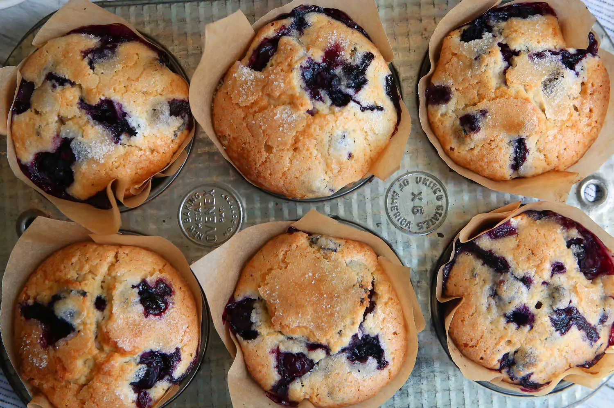

Blueberry Muffins

In 1985, The Times published a recipe for the blueberry muffins served at the Ritz-Carlton hotel in Boston, which Marian Burros, who adapted the recipe, judged among her favorite muffins in the city.
½ cup (1 stick)softened butter1¼ cups (250g)sugar2large eggs1½ cupssugar1 tspvanilla extract2 cups (240g)flour½ tspsalt2 tspbaking powder½ cupmilk2 cupsblueberries, washed, drained and picked over
Preheat oven to 375 degrees.
Cream the butter and sugar until light.
Add the eggs, one at a time, beating well after each addition. Add vanilla.
Sift together the flour, salt and baking powder, and add to the creamed mixture alternately with the milk.
Crush ½ cup blueberries with a fork, and mix into the batter. Fold in the remaining whole berries.
Line a 12 cup standard muffin tin with cupcake liners, and fill with batter. Sprinkle the 3 teaspoons sugar over the tops of the muffins, and bake at 375 degrees for about 30-35 minutes.
Remove muffins from tin and cool at least 30 minutes. Store, uncovered, or the muffins will be too moist the second day, if they last that long.